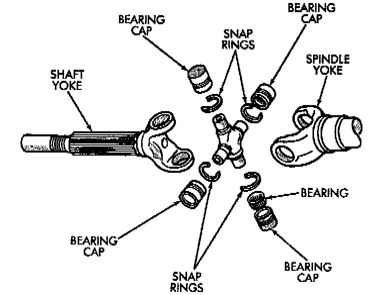
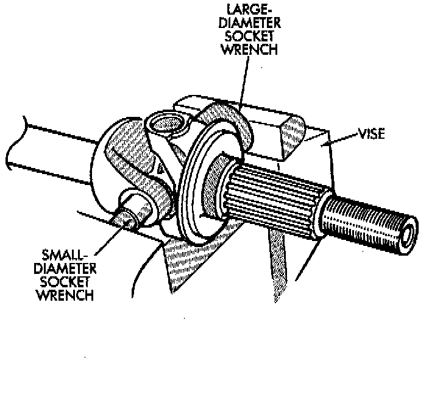

Universal Joint: Service and Repair
NOTE: Single cardan U-joint components are not serviceable. If defective, they must be replaced as a unit. If the bearings, seals, spider, or bearing caps are damaged or worn, replace the complete U-joint.CAUTION: Clamp only the narrow forged portion of the yoke in the vise. Also, to avoid distorting the yoke, do not over tighten the vise jaws.
REMOVAL
1. Remove axle shaft.

2. Remove the bearing cap retaining snap rings.
NOTE: It can be helpful to saturate the bearing caps with penetrating oil prior to removal.
3. Locate a socket where the inside diameter is larger in diameter than the bearing cap. Place the socket (receiver) against the yoke and around the perimeter of the bearing cap to be removed.
4. Locate a socket where the outside diameter is smaller in diameter than the bearing cap. Place the socket (driver) against the opposite bearing cap.

5. Position the yoke with the sockets in a vise.
6. Compress the vise jaws to force the bearing cap into the larger socket (receiver).
7. Release the vise jaws. Remove the sockets and bearing cap that was partially forced out of the yoke.
8. Repeat the above procedure for the remaining bearing cap.
9. Remove the remaining bearing cap, bearings, seals and spider from the propeller shaft yoke.
INSTALLATION
1. Pack the bearing caps 1/3 full of wheel bearing lubricant. Apply Extreme Pressure (EP), lithium-base lubricant to aid in installation.
2. Position the spider in the yoke. Insert the seals and bearings. Tap the bearing caps into the yoke bores far enough to hold the spider in position.
3. Place the socket (driver) against one bearing cap. Position the yoke with the socket wrench in a vise.
4. Compress the vise to force the bearing caps into the yoke. Force the caps enough to install the retaining clips.
5. Install the bearing cap retaining clips.
6. Install axle shaft.